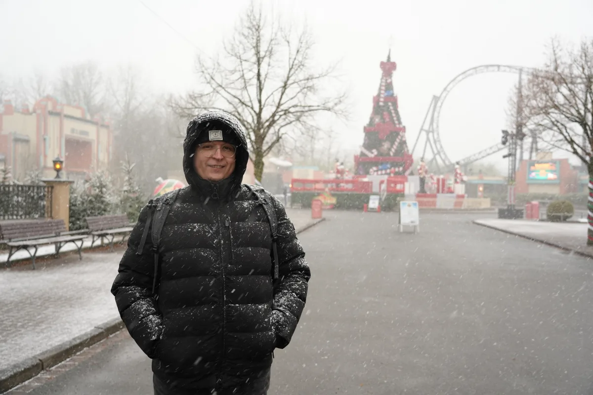
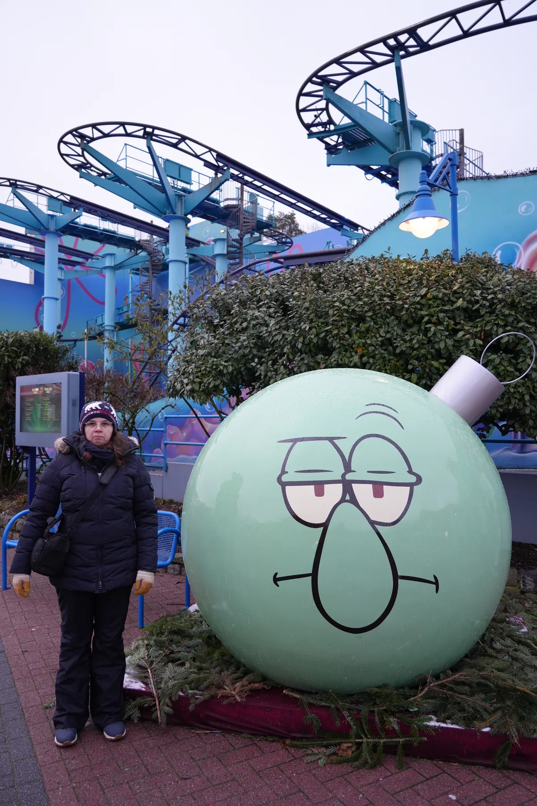
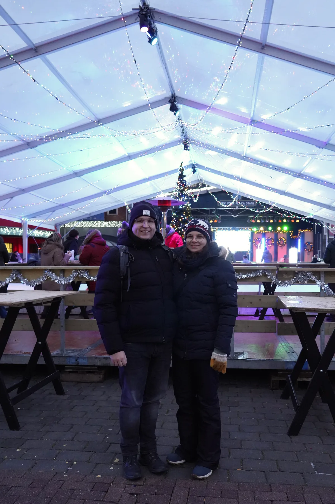
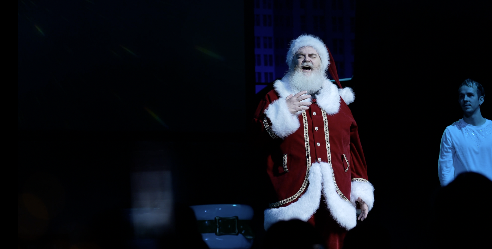
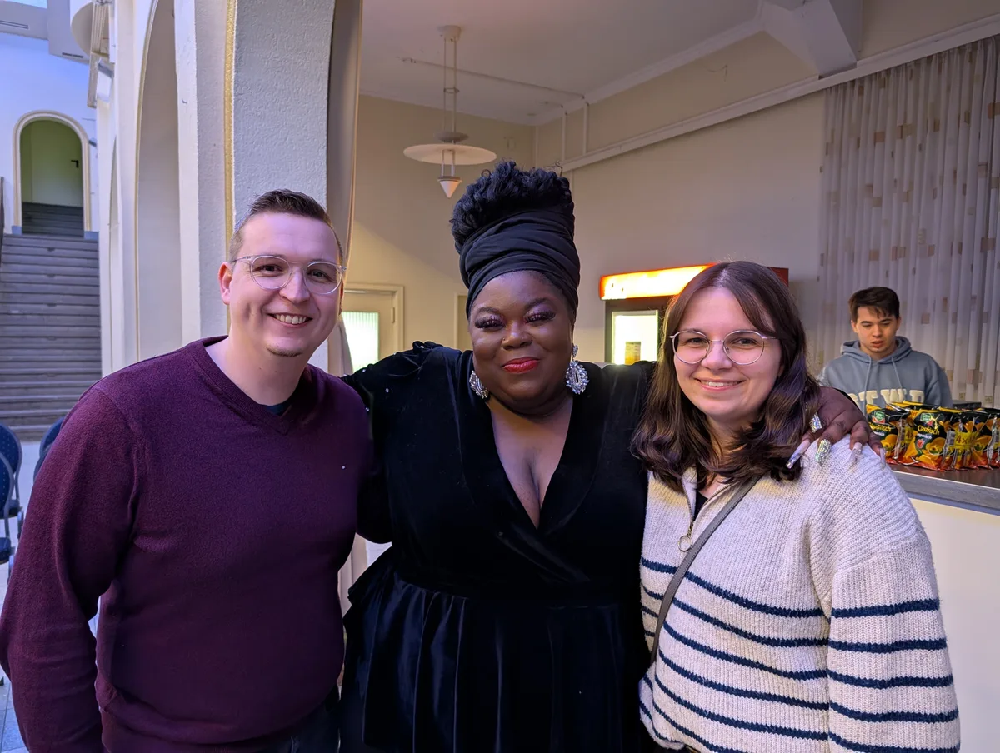
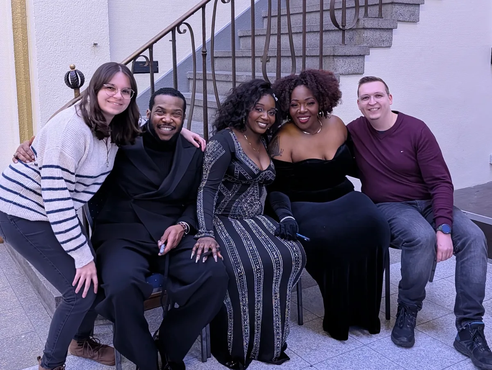
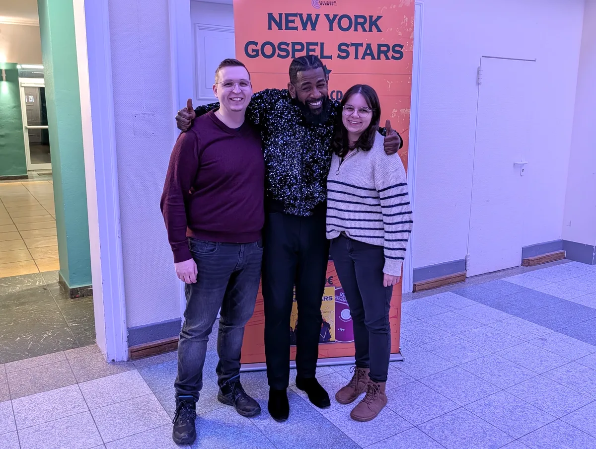

Anfang des Jahres ging es zum Hollywood Christmas in den Movie Park. Das hat uns letztes Jahr schon richtig gut gefallen! Und diesmal war es so richtig winterlich mit ganz viel Schnee.



Toll war auch die Weihnachtsshow im Van Helsing's Club mit einem ganz besonders talentierten Weihnachtsmann.

Am besten fanden wir aber die Gospelshow mit den Leslie B. Harmonies. In unserem Video bekommst du einen guten Eindruck von der Show (sie füllt ungefähr 80% des Videos), schau es dir gerne mal an:Wir waren jedenfalls so beeindruckt, dass wir einen Monat später bei den New York Gospel Stars in Coesfeld waren. Auch ein ganz tolles Erlebnis, das wir sehr empfehlen können!



Also lohnt sich Movie Park's Hollywood Christmas? Ich finde schon. Von der Atmosphäre her ist es okay; da gefällt mir das Phantasialand besser. Wir hatten nun natürlich das Glück mit dem Schnee und das war schon ziemlich atmosphärisch. Aber von den Shows her ist der Movie Park definitiv mein Favorit zur Weihnachtszeit. Von der Eröffnungsshow über den Gospelchor hin zur Weihnachtsshow im Van Helsing's Club hat mich alles total begeistert. Wenn man es gerne etwas ruhiger und leerer mag, können wir Anfang Januar sehr empfehlen. Es war wirklich nicht viel los.
Vom letzten Mal gibt es natürlich auch ein Video, das kannst du dir auch gerne anschauen: